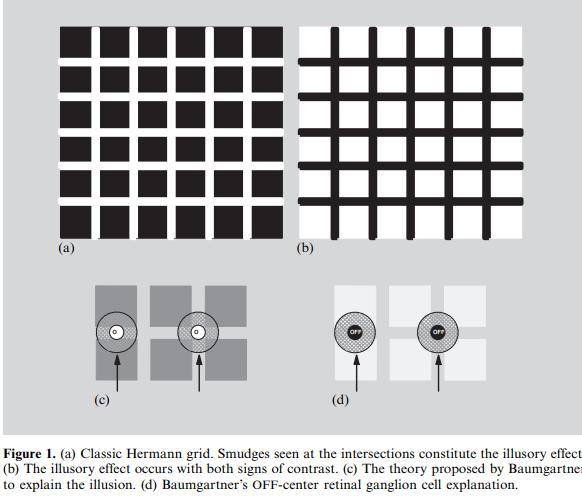

Imaging & Videochevron_right
Renderingchevron_right
Algovischevron_right
Computer Graphicschevron_right
HCIchevron_right
I am 21 years old, I was born in Bogotá. I am in fifth year of systems and computing engineering at National University of Colombia. I am interested in algorithms,machine learning and cibersecurity, so I enjoy learning statistics, math and programming. I often try to solve problems of competitive programming and read for improve my skills in this area.
I haven't had the opportunity to participate and contribute in a research open source project, but I would like enroll in a project in the future.
The Hermann grid illusion (1870) in its best-known form consists of intersecting vertical and horizontal white bars superimposed on a black background, thereby forming an array of evenly spaced black squares. At the intersection of the bars, ghostly gray smudges are perceived comprising the illusion. The smudges are seen everywhere except at the center of gaze. In general the grey blobs disappear when looking directly at an intersection.
"An explanation of this phenomenon by simultaneous contrast is easy. The apparent brightness of each point on the white grid depends on the amount of black which exists in a certain area around it. If one assumes the diameter of this area to be larger than the width of the white stripes, then each point on the intersections receives in its surround less black than any other point on the white stripes; its brightness will thus be less enhanced by contrast and must therefore appear darker." -Kuffler 1953
The Hermann grid illusion is an optical illusion reported by Ludimar Hermann in 1870. Hermann’s Grid is an example of lateral inhibition — a mechanism of our visual system. Light sensitive cells are arranged in rows on the retina and it is possible to stimulate just one cell, called Cell X, to send a signal to the brain. If, however, Cell X’s neighbors are also stimulated, Cell X’s signal won’t be as strong. Stimulating the neighbors of any particular cell actually inhibits the strength of that cell’s response. This means that the strength of any signal sent from the retina is dependent on the signals nearby. The places where the white lines in Hermann’s Grid intersect have white surroundings in four different directions so they appear darker than they actually are.
Kevin Berbaum, Chan Sup Chung(Berbaum K, Chung C S, 1981, p85 – 89) mentioned the Hermann grid has been explained in terms of concentric receptive fields and also used to determine the size of centers and surrounds in perceptive fields in humans. A new figure, which is simply the outlines of the squares of the Hermann grid, shows that receptive fields having a range of excitatory and inhibitory sizes may be responsible for the Hermann illusion.
The classical explanation of the physiological mechanism behind the Hermann grid illusion is due to Baumgartner (1960). Baumgartner believed that the effect is due to inhibitory processes in the retinal ganglion cells, the neurons that transmit signals from the eye to the brain. To each cell there corresponds a small region of the retina called the receptive field, where photoreceptive rods and cones can trigger an electrical response in that cell. The receptive fields of adjacent ganglion cells may overlap. Kuffler (1953) used microelectrodes placed in the retina of cats to measure the response of individual neurons subject to pinpoints of light stimulus, and showed that the receptive field can be broken down into a central disc and a surrounding annulus. Kuffler was also able to demonstrate that retinal ganglion cells come in two distinct kinds – either ON-centre or OFF-centre. It is the difference in stimulus between the centre and the surround of a given neuron that determines the strength of its response (i.e. how rapidly it fires). Baumgartner reasoned that the ON-centre ganglion cells whose receptive fields are centred on the grid crossings have 4 inhibiting bright areas in their surround, whereas those whose fields centre on ‘streets’ have only 2 inhibiting bright areas.
The range of application of Hermann grid and visual illusion is from Graphic Design to Media Design and Advertisement Design. After World War Two there is a common view internationally that war is destroy for human. Then some designs become tools of colonization. Some designs encourage unnecessary consumption by confuse consumers. But designers should tell the truth to consumers, not should cheat consumers for consumption. It is the responsibility for designers to educate consumers correct perceptions of consumption.
The explanation suggested is based on the findings made by neurophysiologists demonstrating that retinal ganglion cells have antagonistic center/surround organization (Kuffler 1953; Werblin and Dowling 1969; Schiller 1996). Consequently, when the grid consists of black squares and white bars, an ON-center retinal ganglion cell responds much more vigorously to a small bright spot placed into its receptive field center than to a large bright spot that activates both the center and the surround of the receptive field. The argument advanced was that smaller responses are elicited in the ON-center retinal ganglion cells whose receptive field centers fall into the intersections of the white bars than in cells whose receptive fields fall along non-intersecting regions of the bars.This difference in activity is due to the fact that at the intersections more surround inhibition is produced in ON-center retinal ganglion cells than at other sites. The same considerations apply to OFF-center ganglion cells when contrast is reversed.

The dark spot at the intersection would merely be the consequence of less simultaneous contrast present in this location. An analogous explanation had already been suggested by Brewster (1844) for light illusory spots. The assumption of a relative depression of brightness or darkness at the intersection, due to less contrast, is consistent with modern accounts of these phenomena.
Today, the most commonly accepted explanation of the Hermann grid illusion is that suggested by Baumgartner (1960), which is based on the receptive-field organization of the human visual system. In Baumgartner's model , brightness signalling on-center cells stimulated by the intersection receive about twice as much lateral inhibition as cells stimulated by the bars. As a result, the intersection appears darker. Conversely, in a black grid on a white background, darkness-signalling offcenter cells stimulated by the intersection receive only about half as much lateral activation as cells stimulated by the bars ). Thus, the intersection appears lighter.
János Geier, Lászlo Bernáth, Mariann Hudák, Lászlo Séra(Geier J, Bernáth L, Hudák M, Séra L, 2008, p 651 – 665) noted the generally accepted explanation of the Hermann grid illusion is Baumgartner’s hypothesis that the illusory effect is generated by the response of retinal ganglion cells with concentric ON – OFF or OFF – ON receptive fields. To challenge this explanation, they have introduced some simple distortions to the grid lines which make the illusion disappear totally, while all preconditions of Baumgartner’s hypothesis remain unchanged. To analyse the behaviour of the new versions of the grid, they carried out psychophysical experiments, in which they measured the distortion tolerance: the level of distortion at which the illusion disappears at a given type of distortion for a given subject. Statistical analysis has shown that the distortion tolerance is independent of grid-line width within a wide range, and of the type of distortion, except when one side of each line remains straight. They conclude that the main cause of the Hermann grid illusion is the straightness of the edges of the grid lines, and we propose a theory which explains why the illusory spots occur in the original Hermann grid and why they disappear in curved grids.
Spillman(1993). The Hermann grid illusion: a tool for studying human perceptive field organization . Recuperado de : https://citeseerx.ist.psu.edu/viewdoc/download?doi=10.1.1.997.2387&rep=rep1&type=pdf
Hsiu-Wen(2010). A SURVEY OF EFFECT OF DECLINING AND ROTATING ON HERMANN GRID. Recuperado de : https://www.keer.org/keer2010/Papers/0556.pdf
The Illusion Index. Hermann Grid . Recuperado de : https://www.illusionsindex.org/i/hermann-grid